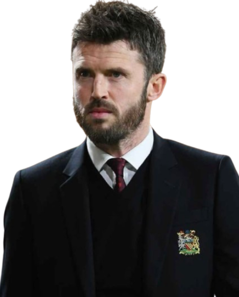

Treinador: Michael Carrick
Michael Carrick é o atual treinador principal do Manchester United na Premier League, tendo assumido o cargo interinamente até ao final da temporada 2025-26 em 13 de janeiro de 2026. Ele também teve uma carreira de 12 anos como médio defensivo no clube, onde ganhou vários títulos importantes.

Estádio: Old Trafford
O Old Trafford, carinhosamente apelidado de "Teatro dos Sonhos" por Sir Bobby Charlton, é o histórico estádio do Manchester United e um dos recintos de futebol mais emblemáticos do mundo.

Estilo de Jogo:
O estilo de jogo de Michael Carrick no Manchester United baseia-se num futebol de posse de bola, organização defensiva e transições rápidas.
"Concilio et Labore!"